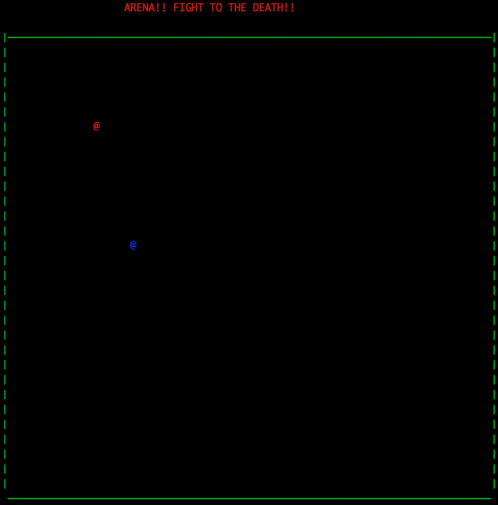
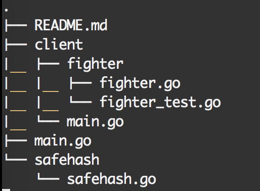
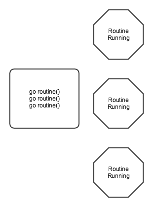
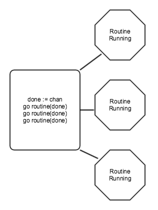

Perl 2 Go
A Survey

Why Go?
- We use Go at MediaMath(& Perl)
- Learn new constructs
History Of Go
- Created at Google by Robert Griesemer, Rob Pike and Ken Thompson in 2007/2008.
- Became a public open source project in 2009
This talk
- Build A Game!
- Best way to learn
- Oh, I'm also not an expert, so be nice :)
What I hope One will get from this talk
- Go over Arena
- Touch on various Go semantics
- Go over other areas of interest
- Try to answer some questions if I can
Arena!
Server client model
HP of just 5
Simple, demonstrates most of the constructs of Go
Arena!
Typical Game Play
- Left, right down, up arrows
- First one to 5 wins
- Spacebar for hitting
- Only 2 clients
What it'll demonstrate
- Concurrency patterns
- Structs and interfaces
- Types
- Control structures
- Unit testing
- and more
Directory Structure of Game
First Sidetrack: Hello
package main
import "fmt"
func main() {
fmt.Println("Hello world!")
}
Compile Hello World
go build
./helloworld
Fighter
package fighter
import (
"fmt"
"github.com/logie17/arena/safehash"
)
Fighter
type fighter struct {
x int
y int
id int
enemyx int
enemyy int
enemyid int
kind string
character rune
message chan Line
reply chan Line
}
Go Routine Side Track
package main
import "fmt"
func main() {
go routine()
go routine()
go routine()
}
func routine () {
fmt.Println("Hello world!")
}
What it looks like
Lets use Channels
package main
import "fmt"
func main() {
done := make(chan string)
go routine(done)
go routine(done)
go routine(done)
<-done
<-done
<-done
close(done)
}
func routine (done chan string) {
fmt.Println("Hello world!")
done<-"done"
}
What it looks like
Types
- int
- string
- rune
- struct
Objects and Methods
func NewFighter(x, y, id int, kind string, reply chan Line) Fighter {
mySafeMap.Insert(fmt.Sprintf("%d_x", id), x)
mySafeMap.Insert(fmt.Sprintf("%d_y", id), y)
message := make(chan Line)
fighter := &fighter{
x: x, y: y, id: id, kind: kind, character: '♥',
// code point 2665
message: message, reply: reply,
}
fighter.Listen()
fighter.Draw()
return fighter
}
Objects and Methods
func (fighter *fighter) Down() {
fighter.Hide()
newY := fighter.y + 1
if fighter.y < 33 && !fighter.cellIsOccupied(fighter.x, newY) {
fighter.y = newY
}
fighter.Draw()
}
Interfaces
Drive behavior of an object
type Fighter interface {
Left()
Right()
Up()
Down()
Id() int
Action(string)
Listen()
SendMessage(string)
}
Unit Testing
package fighter
import "testing"
func TestMoveLeft(t *testing.T) {
enemyReply := make(chan CommandData, 1)
NewFighter(4,4,1,"enemy", enemyReply)
reply := make(chan CommandData)
go func() {
subject := NewFighter(4,5,2,"me",reply)
subject.Left()
}()
if response:=<-reply; response.Action != "draw_me" {
t.Errorf("A draw action should come back in the reply")
}
}
Run the test
$ go test ./...
ok github.com/logie17/arena/client/fighter0.006s
Type Keyword Sidetrack
type Count int
func main() {
var c Count = 1
fmt.Println(c.Increment()
}
func(count *Count) Increment() Count {
*count++
return *count
}
Server
- Need to accept multiple connection
- Need to broadcast messages to clients
- This where Go shines
Concurrency
- Go Routines
- Channels
- Deeply rooted in Communicating Sequential Processes (CSP)
- Long history in other similar languages
Let's dive in
func main() {
s := NewServer()
err := s.Serve()
if err != nil {
println(err)
}
}
Listen for connections
func (s *Server) Serve() (err error) {
s.serverListener, err = net.Listen("tcp", fmt.Sprint("127.0.0.1:", 9000))
if err != nil {
s.Log(err)
return err
}
defer s.serverListener.Close()
connId := 1
for {
//This blocks
conn, err := s.serverListener.Accept()
if err != nil {
s.Log(err)
break
}
client := NewClient(connId)
client.Listen(conn) // We'll come back to this
s.Clients = append(s.Clients, client)
go s.handleConn(conn, client)
connId++
}
return nil
}
We have a connection now what?
func (s *Server) handleConn(conn net.Conn, client *Client) {
s.Log("trying to handle connection")
bufc := bufio.NewReader(conn)
s.Broadcast(fmt.Sprintf("pos,%d,%d,%d\n", client.Id, client.X, client.Y))
for {
line, _, err := bufc.ReadLine()
if err != nil {
break
}
s.Broadcast(string(line))
}
}
Using Channels to Broadcast
func (s *Server) Broadcast(line string) {
s.Log(line)
for _, client := range s.Clients {
client.Message <- string(line)
}
}
Message Handling
go func() {
for line := range client.Message {
action, id, x, y := client.parseLine(string(line))
if action == "stab" && client.NearEnemy() {
client.sendAttackMsg(conn, action, id)
} else {
client.sendPosMsg(conn, action, id, x, y)
}
}
}()
Message Handling
func (client *Client) sendPosMsg(conn net.Conn, action string, id, x, y int) {
if id == client.Id {
client.X = x
client.Y = y
} else {
client.EX = x
client.EY = y
}
client.SendMessage(conn, fmt.Sprintf("%s,%d,%d,%d\n", action, id, x, y))
}
Client Side Code
func main() {
...
cn := establishConnection() // Returns a Conn
defer cn.Close()
// Has a Read method that io.Reader expects
bufc := bufio.NewReader(cn) // Accepts a io.Reader
reply := make(chan fighter.Line, 4)
defer close(reply)
x, y, fighterId := readConnectionLine(bufc)
player := fighter.NewFighter(x, y, fighterId, "me", reply)
fighters := []fighter.Fighter{player}
readFromServer(fighterId, fighters, bufc, reply)
handleFighterActions(cn, reply)
handleKeyEvents(player)
}
establishConnection
func establishConnection() net.Conn {
destination := "127.0.0.1:9000"
cn, err := net.Dial("tcp", destination)
if err != nil {
fmt.Println("Unable to open connection: ", err.Error())
os.Exit(1)
}
return cn
}
Listen to Server
func readFromServer(fighterId int, fighters []fighter.Fighter,
bufc *bufio.Reader, reply chan fighter.Line) {
go func() {
for {
line, _ := bufc.ReadString('\n') // Blocks
data := parseLine(string(line))
if data.Id != fighterId
&& isNewEnemy(data.Id, fighters) {
enemy := fighter.NewFighter(data.X,
data.Y, data.Id, "enemy", reply)
fighters = append(fighters, enemy)
}
for _, fighter := range fighters {
fighter.SendMessage(data)
}
}
}()
}
Handle Events From Server
func handleFighterActions(cn net.Conn, reply chan fighter.Line) {
go func() {
for {
select {
case response, ok := <-reply:
if ok {
action := response.Action
id := response.Id
x := response.X
y := response.Y
if action == "refresh_board" {
termbox.Flush()
...
Handle Key Events
func handleKeyEvents(f fighter.Fighter) {
for {
switch ev := termbox.PollEvent(); ev.Type {
case termbox.EventKey:
switch ev.Key {
case termbox.KeyEsc:
os.Exit(0)
case termbox.KeyArrowDown:
f.Action("Down")
}
}
}
}
Let's talk more about concurrency
Go supplies a great sync library
Safe Hash
package safehash
import (
"sync"
)
type safeMap struct {
myHash map[string]int
mutex *sync.RWMutex
}
Safe Hash
func (sf *safeMap) Insert(key string, val int) {
sf.mutex.Lock()
defer sf.mutex.Unlock()
sf.myHash[key] = val
}
func NewSafeMap() *safeMap {
return &safeMap{make(map[string]int), new(sync.RWMutex)}
}
func (sf *safeMap) Find(key string) int {
sf.mutex.RLock()
defer sf.mutex.RUnlock()
return sf.myHash[key]
}
LIVE DEMO TIME!
In Summary
- Do not program like me
- Go is simple but powerful
- There is more to learn!
Thank you!
The people I love
MediaMath for giving me this opportunity